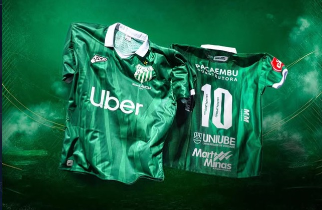

Uniube é patrocinadora oficial do Uberlândia Esporte Clube

A Uniube anunciou sua parceria com o Uberlândia Esporte Clube, tornando-se patrocinadora oficial da equipe e reforçando sua conexão com o esporte, com a cidade e com grandes iniciativas regionais.
A novidade fortalece a presença da universidade em ações que vão além da sala de aula, aproximando ainda mais a instituição da comunidade e de projetos que movimentam a região.
A parceria destaca a proposta da Uniube de estar conectada ao desenvolvimento local, ao incentivo ao esporte e à valorização de experiências que unem educação, cidade e grandes oportunidades.
Com o anúncio, a universidade amplia sua visibilidade e reafirma seu compromisso com iniciativas que geram impacto positivo, mostrando que sua atuação também está presente em espaços de integração, cultura e esporte.
A mensagem da campanha resume bem o momento: “Todo mundo é UniUBER”, destacando a ligação entre a instituição, a cidade e essa nova parceria.